리눅스마스터-1급 (2011-09-03 기출문제)
1과목: 리눅스 실무의 이해
1. 운영체제의 기능에 대한 설명으로 틀린 것은?
- 하드웨어와 사용자 간의 인터페이스를 제공 한다.
- 시스템 자원을 스케줄링 한다.
- 사용자가 원하는 특정 문제를 해결하기 위한 작업을 처리한다.
- 응용프로그램의 작성과 실행을 편리하게 한다.
(정답률: 67%)

2. 리눅스에서 강력하게 지원하는 프로토콜이며, 인터넷의 기본 프로토콜로 알맞은 것은?
- NetBEUI
- IPX/SPX
- TCP/IP
- Novell Netware
(정답률: 89%)
3. 리눅스의 메모리 관리 시 실시간 페이지 적재 기능과 직접적으로 관련되는 용어로 알맞은 것은?
- DDL(Dynamic Link Library)
- 스왑(Swap)
- Page Switching
- DSL(Dynamic Shared Library)
(정답률: 54%)
4. GNU프로젝트와 관련한 자유 소프트웨어의 의미로 알맞지 않은 것은?
- 프로그램을 복제하고 친구나 동료와 함께 이를 공유할 수 있는 자유
- 프로그램을 일부 수정하여 개인 저작권을 등록할 수 있는 자유
- 소스 코드를 이용해서 이를 개작할 수 있는 자유
- 개작된 프로그램을 배포할 수 있는 자유
(정답률: 83%)
5. 초기 유닉스 시스템의 설계 목적과 상황으로 적절하지 않은 것은?
- 대형 시스템으로 설계하려 했다.
- 멀틱스라는 시스템과의 차별화로 유닉스라는 명칭이 생겨났다.
- 한번에 한 사용자만이 사용할 수 있게 했다.
- 한번에 한 가지 일처리만 가능하기도 했다.
(정답률: 50%)
6. 컴퓨터의 제어장치에 속하지 않는 것은?
- 프로그램 계수기
- 명령 레지스터
- 수치 보조프로세서
- 명령 해독기
(정답률: 66%)
7. 리눅스 시스템의 구성 요소가 아닌 것은?
- 커널
- 쉘
- 유틸리티
- 레지스터
(정답률: 70%)
8. 리눅스 구성요소 중 하드웨어를 제어하고 스케줄링을 담당하는 것은?
- Shell
- Utility
- Kernel
- Application
(정답률: 78%)
9. 리눅스 부트로더인 LILO/GRUB가 설치되는 영역으로 알맞은 것은?
- ROOT 영역
- MBR 영역
- Directory 영역
- 데이터 영역
(정답률: 79%)
10. 사용자의 기본 환경설정에 사용되며, 로그인 시 본쉘이나 C쉘에 의해 실행되는 스크립트가 아닌 것은?
- /etc/profile
- /etc/csh.login
- /etc/config
- /etc/csh.cshrc
(정답률: 57%)
11. GNOME에서 X윈도우를 실행하는 명령으로 알맞은 것은?
- startwindow
- startgnome
- startwin
- startx
(정답률: 85%)
12. 기본 윈도우 매니저를 변경하기 위해 편집해야 할 파일로 알맞은 것은?
- /etc/console
- /etc/sysconfig/grub
- /etc/sysconfig/console
- /etc/sysconfig/desktop
(정답률: 58%)
13. /etc/passwd의 등록 사용자 정보 중 내용을 확인 할 수 없는 것은?
- 사용자의 홈디렉토리
- 사용자의 shell
- 사용자의 ID
- 사용자의 암호
(정답률: 77%)
14. 다음 부팅 과정 중 일부에 대한 순서를 알맞게 나열한 것은?
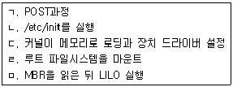
- ㄱ - ㄴ - ㄷ - ㄹ - ㅁ
- ㄱ - ㅁ - ㄷ - ㄴ - ㄹ
- ㄱ - ㄴ - ㄹ - ㄷ - ㅁ
- ㄱ - ㅁ - ㄷ - ㄹ - ㄴ
(정답률: 61%)
15. 프로세스가 기억장치를 할당받은 활동상태가 아닌 것은?
- 실행상태
- 지연상태
- 준비상태
- 대기상태
(정답률: 66%)
16. OSI 7 계층 참조모델에서 데이터 링크 계층의 기능이 아닌 것은?
- 시간 제한 및 확인
- 오류제어
- 암호화
- 흐름제어
(정답률: 77%)
17. 컴퓨터와 컴퓨터를 직접 연결할 때 사용하는 네트워크 케이블로 알맞은 것은?
- 크로스(Cross) 케이블
- 다이렉트(Direct) 케이블
- 점퍼(Jumper) 케이블
- 모뎀(Modem) 케이블
(정답률: 65%)
18. 이더넷(Ethernet)에서 사용하는 논리 토폴로지로 알맞은 것은?
- Linear Topology
- Ring Topology
- Bus Topology
- Mesh Topology
(정답률: 58%)
19. 양방향 통신 중 어느 한순간에는 한쪽 방향으로만 데이터 전송이 가능한 방식으로 알맞은 것은?
- 단방향 통신
- 반이중 통신
- 전이중 통신
- 쌍방향 통신
(정답률: 72%)
20. 네트워크 환경설정 명령이 아닌 것은?
- ifconfig
- netstat
- netconfig
- linuxconf
(정답률: 35%)
2과목: 리눅스 시스템 관리
21. su 명령에 대한 설명 중 틀린 것은?
- 일반사용자가 su를 사용하여 일반사용자의 로그인 암호를 입력하면 root의 권한으로 명령을 실행할 수 있다.
- 일반사용자가 su를 사용하여 root의 로그인 암호를 입력하면 root 권한을 가질 수 있다.
- root가 su를 사용하면 아무런 암호 입력 없이 일반사용자의 권한으로 명령을 실행할 수 있다.
- su 뒤에 로그인 이름이 없으면, su root 명령과 동일하게 적용 된다.
(정답률: 65%)
22. 사용자 및 그룹 관리에 대한 설명 중 알맞은 것은?
- 리눅스 시스템의 일반사용자는 usermod명령을 사용하여 본인의 로그인이름을 변경할 수 있다.
- 리눅스 시스템의 일반사용자는 change명령을 사용하여 본인의 암호를 변경할 수 있다.
- 리눅스 시스템의 일반사용자는 chsh명령을 사용하여 본인의 로그인쉘을 변경할 수 있다.
- 리눅스 시스템의 일반사용자는 groupmod명령을 사용하여 본인의 그룹ID를 변경할 수 있다.
(정답률: 59%)
23. 다음에서 설명하는 내용을 만족하는 명령으로 알맞은 것은?
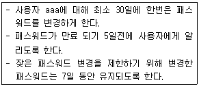
- chage -m 30 -d 5 -E 7 aaa
- chage -M 30 -W 5 -m 7 aaa
- chage -m 30 -M 5 -W 7 aaa
- chage -M 30 -d 5 -m 7 aaa
(정답률: 60%)
24. 다음을 만족하도록 aaa 사용자를 추가하는 명령으로 알맞은 것은?
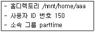
- adduser -f /mnt/home/aaa -G parttime -U 150 aaa
- useradd -f /mnt/home/aaa -G parttime -u 150 aaa
- adduser -d /mnt/home/aaa -g parttime -U 150 aaa
- useradd -d /mnt/home/aaa -g parttime -u 150 aaa
(정답률: 62%)
25. 리눅스 시스템에서 사용되는 파일의 종류에 속하지 않는 것은?
- 디렉토리: 다른 파일을 조직하고 액세스하는데 필요한 정보
- 일반파일: 텍스트파일이나 이진파일
- 실행파일: 명령어 실행을 위한 파일
- 특수파일: 리눅스가 자원을 관리하는 장치
(정답률: 44%)
26. 다음 aaa.txt 파일 중 사용자 ccc(속한 그룹은 ddd)가 읽을 수 없는 파일로 알맞은 것은?
- drwxr-xr-x 2 aaa bbb 123 2011-02-15 16:44 aaa.txt
- drwxr--r-- 2 aaa ddd 123 2011-02-15 16:44 aaa.txt
- drwxr-x--- 2 aaa bbb 123 2011-02-15 16:44 aaa.txt
- drwxr-xr-x 2 aaa ddd 123 2011-02-15 16:44 aaa.txt
(정답률: 78%)
27. 다음 각 파일의 특수 목적 접근 모드에 대한 설명으로 틀린 것은?
- -rwsr-xr-x: s는 SUID로서 프로그램을 실행하는 동안에는 프로세스가 파일의 소유자와 같은 권한으로 실행된다.
- -rwxr-xr-s: s는 OUID로서 프로그램을 실행하는 동안에는 프로세스가 others와 같은 권한 으로 실행된다.
- drwxrwxrwt: t는 sticky bit로서 퍼미션에 관계없이 소유자만이 파일을 지울 수 있다.
- -rwxr-sr-x: s는 SGID로서 프로그램을 실행하는 동안에는 프로세스가 파일의 그룹과 같은 권한으로 실행된다.
(정답률: 65%)
28. 리눅스의 파일시스템을 검사하는 fsck명령의 검사 진행 단계의 순서를 알맞게 나열한 것은?
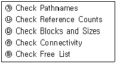
- ㉮-㉯-㉰-㉱-㉲
- ㉰-㉮-㉱-㉯-㉲
- ㉱-㉮-㉰-㉯-㉲
- ㉯-㉰-㉱-㉮-㉲
(정답률: 38%)
29. 다음과 같은 파일시스템이 마운트되어 있다. 읽기 전용인 /dev/hdb1을 읽기/쓰기모두 가능하게 변경 할 수 있는 명령어로 알맞은 것은?
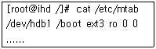
- remount -rw /dev/hdb1
- mount -rw -o remount /dev/hdb1
- mount -rw /dev/hdb1
- mount -o ro -o remount /dev/hdb1
(정답률: 59%)
30. 다음 중 파일시스템의 종류별로 사용할 수 있는 –t 옵션으로 틀린 것은?
- 윈도즈98 : mount -t msdos /dev/hda1/mnt/disk1
- 윈도즈2000/XP : mount -t ntfs /dev/hda1/mnt/disk1
- 리눅스 파일 : mount -t ext2 /dev/hda1/mnt/disk1
- CD-ROM : mount -t iso9660 /dev/cdrom/mnt/cdrom
(정답률: 57%)
31. 기존의 리눅스 시스템에 새로운 HDD를 추가하는 순서를 알맞게 나열한 것은?
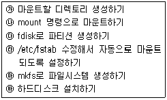
- ㉰-㉲-㉮-㉯-㉳-㉱
- ㉳-㉰-㉲-㉮-㉯-㉱
- ㉳-㉮-㉯-㉰-㉲-㉱
- ㉮-㉳-㉲-㉰-㉱-㉯
(정답률: 67%)
32. 다음 fsck의 종료 코드에 대한 설명 중 틀린 것은?
- 0 : 에러없음
- 1 : 파일 시스템에 고쳐지지 않은 에러가 남아 있음
- 2 : 파일 시스템 재부팅 필요
- 8 : 연산 에러
(정답률: 55%)
33. 다음 중 포그라운드 프로세스와 백그라운드 프로세스에 대한 설명으로 틀린 것은?
- 프로세스가 백그라운드로 실행되는 동안에는 입력을 받을 수 없다.
- 쉘 프롬프트에서 명령을 입력하고 엔터를 치면, 대부분 포그라운드로 프로세스가 실행된다.
- 하나의 프로세스가 포그라운드로 실행 중일 때 새로운 명령어를 입력하고 엔터를 치면 백그라운드로 프로세스가 실행된다.
- 포그라운드로 실행되는 프로세스는 Ctrl+C 인터럽트 키로 강제 종료시킬 수 있다.
(정답률: 43%)
34. 다음 중 ps 명령에 대한 설명으로 틀린 것은?
- 현재 실행중인 작업을 사용자와 프로세스 ID로 보여주는 명령어이다.
- 옵션없이 ps 명령을 사용하면, 현재 터미널과 관련된 프로세스에 대한 정보만 출력한다.
- 모든 프로세스에 대해, 그 부모 프로세스와 자식 프로세스의 ID도 출력된다.
- 프로세스 번호의 범위는 0부터 32737까지 사용 된다.
(정답률: 44%)
35. 프로세스의 스케줄링 우선권을 변경할 때 사용 하는 명령어로 알맞은 것은?
- nice
- fine
- mutt
- priority
(정답률: 74%)
36. 다음 중 프로세스와 관련된 명령어와 그 설명이 틀린 것은?
- pstree: 부모 프로세스와 자식 프로세스의 관계를 트리형태로 보여 준다.
- nohup: hangup 신호와 무관하게 명령을 수행 하고, 출력은 nohup.out에 저장되도록 한다.
- fg: 백그라운드 프로세스를 포그라운드 프로세스로 변환한다.
- killall: 주어진 프로세스 번호와 관련된 모든 프로세스를 종료시킨다.
(정답률: 49%)
37. RPM의 용도와 그 설명 중 틀린 것은?
- 패키지 정보검색: 설치되었거나, 설치할 패키지에 대한 정보를 검색할 수 있다.
- 패키지 검증: 어떤 패키지에 속하는 특정파일을 검증해서 다시 설치할 수 있다.
- 업그레이드 기능: 기존 파일을 삭제한 후에 새로운 버전의 패키지로 업그레이드할 수 있다.
- 패키지 자동설치 및 제거: *.rpm파일만 있으면, 해당 디렉토리에 자동적으로 설치가 가능하다.
(정답률: 52%)
38. RPM 패키지의 이름을 정하는 규칙에 맞게 작성 된 것으로 알맞은 것은?
- 패키지이름-버전-릴리즈-아키텍처.rpm
- 아키텍처-버전-릴리즈-패키지이름.rpm
- 버전-릴리즈-패키지이름-아키텍처.rpm
- 릴리즈-버전-아키텍처-패키지이름.rpm
(정답률: 74%)
39. 소스 프로그램 파일을 컴파일하기 위한 make의 장점이 아닌 것은?
- 여러 소스 프로그램 파일에 대해서도 간단하게 컴파일할 수 있다.
- Windows의 Visual Studio처럼 통합개발환경(IDE)을 제공해 준다.
- 다중 플랫폼에 대해 컴파일을 해야할 때에는 플랫폼별로 makefile만 준비하면 된다.
- 프로그래밍 언어가 다른 소스 프로그램 파일에 대해서도 동시에 make을 사용할 수 있다.
(정답률: 49%)
40. GNU C 컴파일러인 gcc에 대한 설명으로 틀린 것은?
- gcc hello.c 명령에 의해 컴파일된 hello 실행 파일이 생성된다.
- 비주얼 환경을 제공하지 않기 때문에 터미널을 통해서 프로그램을 사용해야 한다.
- #include 문장에서 지정한 헤더파일이 들어 있는 곳을 지정하기 위하여 -I 옵션을 사용 한다.
- gcc가 컴파일에 필요한 라이브러리를 지정하기 위하여 -l옵션과 -L옵션을 사용할 수 있다.
(정답률: 34%)
41. 리눅스는 하드디스크의 일정 부분을 ( )이라는 방식으로 RAM처럼 사용할 수 있다. ( 괄호 )안에 들어갈 내용으로 알맞은 것은?
- boot
- root
- data
- swap
(정답률: 81%)
42. 다음 중 시스템에 새로 장착된 사운드카드를 인식하여 사용하기 위해 리눅스에서 사운드카드 설정에 관련된 것으로 틀린 것은?
- alsaconfig
- sndconfig
- kudzu
- lsmod
(정답률: 54%)
43. 다음 중 시리얼 포트를 나타내는 특수파일로 알맞은 것은?
- /dev/hda
- /dev/sda
- /dev/eth1
- /dev/ttyS0
(정답률: 76%)
44. 리눅스 운영체제 작성 시 대부분의 코딩을 담당한 프로그래밍 언어로 알맞은 것은?
- 어셈블리 언어
- C 언어
- 자바 언어
- 비주얼 베이직 언어
(정답률: 77%)
45. 커널 컴파일을 위한 환경 설정 인터페이스가 아닌 것은?
- make config
- make menuconfig
- make xconfig
- make linux
(정답률: 70%)
46. 커널 컴파일을 수행 시 의존성 관계를 설정하는 것으로 커널2.6 이후에는 불필요한 과정으로 알맞은 것은?
- make dep
- make clean
- make bzImage
- make modules
(정답률: 70%)
47. mkfs.ext3 명령을 이용하여 포맷 시 불량 섹터를 검색하기 위한 옵션으로 알맞은 것은?
- -c
- -b
- -t
- -f
(정답률: 49%)
48. 다음 중 리눅스 부팅디스켓을 만들기 위해 플로피 디스크를 포맷하는 명령어로 알맞은 것은?
- mkfs.ext3 /dev/fd0
- fsck.ext3 -f /dev/hdb1
- mount -t ext3 /dev/fd0 /mnt
- mkbootdisk --device /dev/fd0
(정답률: 50%)
49. 프린터의 작업상태를 확인할 수 있는 명령으로 알맞은 것은?
- lpq
- lpr
- lp
- lprm
(정답률: 68%)
50. 컴퓨터의 CPU에 대한 자세한 정보를 볼 수 있는 명령으로 알맞은 것은?
- ls /proc/cpuinfo
- echo /proc/cpuinfo
- more /proc/cpuinfo
- edit /proc/cpuinfo
(정답률: 63%)
51. 시스템 로그(log)의 특성으로 알맞지 않은 것은?
- 로그는 시스템에서 어떤 일이 일어났는지를 알려준다.
- 시스템에 이상징후가 발생하면 로그파일을 분석해야 한다.
- 로그파일은 절대로 삭제하지 말고 영구적으로 보관해야 한다.
- 시스템에서 제공하는 서비스에 따라서 여러개의 로그파일이 존재할 수 있다.
(정답률: 81%)
52. 다음 로그 파일의 이름과 관련 데몬, 그에 대한 설명으로 틀린 것은?
- access_log - httpd - 웹사이트 방문 기록에 대한 로그
- secure - xinetd - xinetd 타입의 데몬을 접근한 로그
- boot.log - boot – 시스템의 부팅 후 접속에 대한 로그
- messages - syslogd - 리눅스 커널로그 및 일반 로그
(정답률: 36%)
53. 시스템 로그 데몬인 syslogd와 관련된 설명으로 틀린 것은?
- /etc/syslogd.conf - 로그데몬의 설정 파일
- /sbin/syslog - 로그 데몬의 위치 및 데몬 프로그램
- /var/run/syslogd.pid - 시스템 로그 데몬의 PID 파일
- /etc/rc.d/init.d/syslog start - 로그 데몬 실행 방법
(정답률: 46%)
54. 사용자 인증 프로세스의 보안을 위하여 사용하는 쉐도우 패스워드의 설명으로 틀린 것은?
- 쉐도우 패스워드를 사용하기 이전에는 모든 패스워드가 /etc/passwd에 하나의 파일로 포함 되어 있었다.
- 현재의 배포판들은 대부분 기본적으로 쉐도우 패스워드를 제공한다.
- /etc/shadow 파일은 사용자의 암호와 관련된 정보만을 가지고 있다.
- 쉐도우 패스워드는 시스템 관리자만 읽을 수 있으며, 패스워드를 쉽게 알아 볼 수 있다.
(정답률: 75%)
55. 아래는 /etc/xinetd.d에 있는 swat 서비스의 설정 파일의 내용 설명으로 틀린 것은?
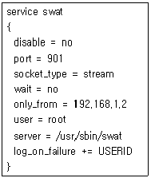
- 현재 swat 서비스는 사용 가능하다.
- 이 서비스를 사용하여 접근할 수 있는 호스트는 192.168.1.2 뿐이다.
- /usr/sbin/swat이 늘 실행되고 있다가 서비스 요청이 들어오면 xinetd가 연결시켜 준다.
- 서비스에서 사용하는 포트번호는 901번이다.
(정답률: 69%)
56. 리눅스 시스템의 보안을 위해서 시스템 관리자가 수행할 사항으로 틀린 것은?
- 시스템 설치후에 지속적으로 패치를 설치하도록 한다.
- 시스템 설치시에 루트 파티션은 최소한으로 작게 잡도록 한다.
- 불필요한 네트워크 서비스는 제거하도록 한다.
- 제공되는 서비스에 대한 로깅을 설정하여야 한다.
(정답률: 70%)
57. 다음은 ssh와 관련된 명령어들이다. 사용된 명령어에 대한 설명이 틀린 것은?
- # ssh -l silver gate.ihd.org - 호스트 gate.ihd.org에 계정이름 silver로 로그인
- # ssh silver@gate.ihd.org - 호스트 gate.ihd.org의 계정이름 silver에게 메일발송
- # ssh-keygen - 인증키 만들기
- # scp dumb silver@gate.ihd.org:. - 파일 dumb를 호스트 gate.ihd.org의 계정이름 silver의 홈디렉토리로 복사하기
(정답률: 56%)
58. 리눅스 시스템에 대한 보안 감시 활동을 위한 프로그램인 COPS의 기능으로 틀린 것은?
- /etc/passwd, /etc/group 파일 내용 점검
- 파일, 디렉토리 및 장치 파일에 대한 퍼미션 점검
- /etc/rc*, /etc/rc*.d/*, cron 파일점검
- ssh 접속에 관련된 파일 점검
(정답률: 53%)
59. 시스템의 백업을 위한 설명으로 틀린 것은?
- 백업 테이프는 번갈아 가며 사용하라
- 백업 테이프는 자주 사용하므로 쓰기 방지를 할 필요가 없다.
- 백업 테이프는 가급적 컴퓨터로부터 멀리 떨어진 곳에서 보관하자.
- 자료 가치에 따라 다른 백업 전략을 취하라.
(정답률: 79%)
60. 다음 중 cpio 명령에 대한 설명으로 알맞은 것은?
- 특정 파일이 갱신되었을 경우 갱신된 파일만을 다시 백업할 수 있다.
- 여러 시스템의 저장장치를 동일하게 유지시키기 위한 프로그램이다.
- 테이프 장치에 원격 접근을 할 수 있는 기능을 제공하며, 보통 rexec, rcmd 호출로 시작된다.
- 리눅스 파일을 테이프 드라이브에 저장하기 위한 프로그램이다.
(정답률: 38%)
3과목: 네트워크 및 서비스의 활용
61. 삼바 서버의 환경설정파일인 smb.conf의 문법적 오류를 검사하고 설정 내용을 확인할 때 사용하는 명령으로 알맞은 것은?
- smbclient
- smbstatus
- testparm
- smbmount
(정답률: 67%)
62. CGI(Common Gateway Interface)에 대한 설명으로 틀린 것은?
- 웹 서버 확장의 하나로 외부 프로그램을 실행시켜 그 결과를 HTML로 돌려주는 방식이다.
- CGI 스크립트는 단순하지만, 다양한 언어로 코딩되지 않기 때문에 사용하기 어렵다.
- CGI 프로세스가 계속 생성될 경우, 메모리 고갈을 초래할 수 있다.
- 프로세스 생성과 초기화를 위한 시간이 필요 하다.
(정답률: 78%)
63. APM에 포함되는 프로그램으로 알맞은 것은?
- Apache, PHP, MySQL
- Apache, PHP, MSSQL
- Apache, Postscript, MySQL
- Apache, Postscript, MSSQL
(정답률: 80%)
64. Mysql 버전 4.1.9를 설치 시, 환경 설정을 위한 ./configure 완료 후 데몬 테스트까지 수행하기 위한 명령어를 순서에 맞게 나열한 것은?
- make, make install, ./mysql_install_db, ./safe_mysqld &
- make, ./make_insatall_db, make install, ./safe_mysqld &
- make, make install, ./safe_mysqld &, ./mysql_install_db
- ./mysql_install_db, make, make install, ./safe_mysqld &
(정답률: 65%)
65. 아파치 서버에 의해 http://도메인명/~계정명으로 개인 홈페이지를 서비스하려고 한다. 웹 서버 설정파일의 ( 괄호 )에 들어갈 내용으로 알맞은 것은?
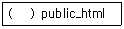
- UserDir
- PageDir
- ServerRoot
- DocumentRoot
(정답률: 51%)
66. IP 기반 가상호스팅에 대한 설명으로 틀린 것은?
- IP 주소를 많이 보유하고 있는 곳이나 사설 IP를 사용하고 있는 인트라넷 환경에 적합하다.
- 가상의 IP 한 개를 추가할 경우, eth0:1의 형식으로 가상 인터페이스를 생성할 수 있다.
- route 명령어로 가상 인터페이스에 대해 라우팅 테이블을 추가하여 사용한다.
- 한 개의 LAN 카드에 총 128개의 인터페이스를 생성할 수 있다.
(정답률: 57%)
67. 데이터베이스에 대한 설명 중 틀린 것은?
- 똑같은 데이터는 절대 중복되지 않는다.
- 컴퓨터가 접근할 수 있는 저장매체에 저장된다.
- 저장되어 있는 데이터는 임시 데이터가 아닌 운영 데이터이다.
- 여러 응용 프로그램이나 시스템이 공동으로 소유하고 유지하는 공용 데이터이다.
(정답률: 66%)
68. 자바 서브릿을 사용할 수 있게 해주는 JServ를 사용하기 위해 필수적으로 설치해야 할 요소가 아닌 것은?
- CGI
- JSDK
- Apache
- ANSI-C 컴파일러
(정답률: 39%)
69. SSL(Secure Socket Layer)을 이용하여 보안 가상 호스트를 정의하기 위한 지시자에 대한 설명으로 틀린 것은?
- SSLEngine on은 SSL을 부팅하는 modSSL 명령이다.
- SSLCertificateFile은 인증서 위치와 이름을 아파치에게 알려준다.
- SSLCACertificateFile은 Intermediate 인증서 위치를 알려주는 것으로 반드시 필요한 요소이다.
- SSLCertificateKeyFile은 단지 루트에게만 읽기/쓰기 허가권이 주어져야 한다.
(정답률: 38%)
70. SMB(Server Message Block)의 공개된 변종인 CIFS(Common Internet File System)에 대한 설명으로 틀린 것은?
- 파일 이름에 유니코드를 사용
- 서버에 있는 파일에 접근, 읽기, 쓰기 모두 가능
- 네트워크 고장이 발생한 경우, 수동으로 접속을 복원
- 특수한 Lock을 사용하여 다른 클라이언트와 함께 파일 공유
(정답률: 62%)
71. 삼바 서버에 삼바 사용자를 추가하는 명령어로 알맞은 것은?
- smbclient
- smbstatus
- smbpasswd
- smbadduser
(정답률: 56%)
72. SWAT 프로그램에 대한 설명 중 틀린 것은?
- 슈퍼데몬에 의해 동작한다.
- 기본적으로 사용하는 포트 번호는 901번이다.
- 웹에서 루트 계정으로 삼바를 설정할 수 있는 유틸리티이다.
- 삼바서버 사용자 추가, 변경, 삭제는 STATUS에서 수행한다.
(정답률: 55%)
73. NFS(Network File System)에 대한 설명으로 틀린 것은?
- 클라이언트/서버형 응용 프로그램이다.
- 개발사인 마이크로소프트사의 등록 상표이다.
- 파일 전송 후 파일을 조작할 필요가 없다.
- 서버와 클라이언트에 TCP/IP 프로토콜을 설치해야 한다.
(정답률: 70%)
74. NFS 서버에 접근할 때 사용하는 옵션에 대한 설명 중 틀린 것은?
- retrans : 재전송 시간을 지정
- wsize : 서버에 기록할 때 사용하는 바이트 수 지정
- hard : 타임아웃이 발생하면 메시지를 표시하고 계속 재시도
- soft : 타임아웃이 발생하면 I/O 에러 표시
(정답률: 36%)
75. NFS 서버에 대해 질의를 하여 사용중인 상태를 표시하는 showmount 옵션에 대한 설명으로 틀린 것은?
- -a : 클라이언트 호스트이름, 마운트된 디렉토리를 출력한다.
- -d : 클라이언트에서 사용하는 디렉토리 이름만 출력한다.
- -e : NFS 서버에서 마운트된 디렉토리를 제거 한다.
- -h : 간단한 도움말을 출력한다.
(정답률: 50%)
76. ProFTPD 환경설정 파일에서 일반 사용자의 홈 디렉토리가 최상위 디렉토리까지 접근 가능하게 하기위한 ( 괄호 )의 내용으로 알맞은 것은?
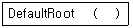
- yes
- no
- ~ /
- X
(정답률: 51%)
77. FTP 서버의 디렉토리 권한을 설정하는 명령어에 대한 설명으로 틀린 것은?
- WRITE : MKD, RMD 명령 포함
- STOR : LIST, NLST 명령 포함
- READ : RETR과 STAT 명령 포함
- LOGIN : 서버에 연결하거나 로그인을 제한 할 경우
(정답률: 57%)
78. FTP 서버에서 사용하는 기본 포트번호로 알맞은 것은?
- 21
- 23
- 25
- 80
(정답률: 75%)
79. 사용자가 메일을 보기 위해 사용하는 프로그램으로 유도라, 아웃룩 등을 나타내는 용어로 알맞은 것은?
- MUA(Mail User Agent)
- MSA(Mail Service Agent)
- MDA(Mail Delivery Agent)
- MTA(Mail Transfer Agent)
(정답률: 63%)
80. sendmail은 스패머들로부터 메일서버를 보호하기 위한 최소한의 접근제어를 /etc/mail/access 파일을 통해서 하고 있다. 다음 메일의 Relay에 대한 설정 및 이에 대한 설명으로 틀린 것은?
- OK - 지정된 호스트나 사용자에게는 무조건 메일 수신
- REJECT - 지정된 도메인의 모든 메일을 송 수신 거부
- DISCARD - 지정된 도메인에게서 메일을 받아 모두 폐기
- 550 - 지정된 메일 주소와 일치하는 메일 수신 거부
(정답률: 61%)
81. 메일서버 sendmail의 access 파일에 대한 설명으로 틀린 것은?
- 특정한 서버가 로컬 메일서버를 릴레이 서버로 사용할지를 결정한다.
- access 파일을 수정하면 등록된 access.db 파일은 자동으로 갱신된다.
- 특정 주소로 오는 메일을 받을 것인지 거절할 것인지의 여부를 결정한다.
- 127.0.0의 주소를 RELAY로 세팅하면 로컬 컴퓨터에서 요청하는 모든 메일의 릴레이를 허용한다는 의미이다.
(정답률: 52%)
82. 스팸 메일과 관련된 설명으로 틀린 것은?
- procmail은 MDA의 일종으로 수많은 스팸 메일이 전송되어도 서버의 부하는 커지지 않는다.
- sendmail 설정 파일 중 access 파일에 DISCARD 옵션은 지정된 도메인에서 메일을 받아 모두 폐기한다.
- 사용자 차원에서 스팸 메일을 막는 방법은 자신의 홈 디렉토리에 .procmailrc 파일을 생성하여 차단할 수 있다.
- sendmail 설정 파일 중 access 파일에 501 옵션은 지정된 메일 주소와 일치하는 메일 수신을 거부할 수 있게 한다.
(정답률: 60%)
83. 메일 보안을 위해 필 짐머만에 의해 개발된 프로그램으로 보안성은 다소 취약하지만 구현이 쉬워 널리 사용되는 도구로 알맞은 것은?
- PGP
- PEM
- DES
- ASE
(정답률: 56%)
84. 슈퍼데몬 동작을 변경할 수 있는 시그널의 종류로 틀린 것은?
- SIGUSR1
- SIGUSR2
- SIGTERM
- SIGDOWN
(정답률: 54%)
85. 슈퍼데몬 설정파일의 속성을 지정할 때, socket_type에 들어갈 인수값으로 알맞은 것은?
- raw
- dgram
- stream
- seqpacket
(정답률: 58%)
86. 다음 중 xinetd 데몬으로 관리할 수 있는 데몬이 아닌 것은?
- telnet
- pop3
- ftp
- arp
(정답률: 57%)
87. 도메인 이름을 구성하는 규칙으로 틀린 것은?
- 영문자의 대소문자의 구별이 없다.
- 도메인 명은 영문이나 숫자로 시작해야 한다.
- 도메인 명의 길이는 최소 2자에서 최대 63자까지 가능하다.
- 도메인 명에 특수문자는 사용할 수 없으나 언더바(_)는 사용할 수 있다.
(정답률: 50%)
88. 네임서버를 분류하는 종류가 아닌 것은?
- 캐싱 서버
- 포워딩 서버
- 주네임 서버
- 보조네임 서버
(정답률: 69%)
89. DNS서버를 테스트할 수 있는 도구로 알맞은 것은?
- dig
- host
- netstat
- nslookup
(정답률: 50%)
90. PROXY 서버 프로그램인 squid를 소스 설치하고 설정한 후 데몬을 구동시키는 방법으로 알맞은 것은?
- /usr/local/squid/bin/squid &
- /usr/local/squid/bin/squid -z
- /usr/local/squid/bin/squid start
- /usr/local/squid/bin/squid squid
(정답률: 44%)
91. NIS 서버에서 사용하는 클라이언트 프로그램이 아닌 것은?
- ypcat
- ypbind
- ypinstall
- ypswitch
(정답률: 40%)
92. NIS+ 서버에 대한 설명으로 틀린 것은?
- NIS+의 모델은 스타구조에 근간하고 있다.
- NIS+ namespace의 루트를 형성하는 NIS+디렉토리를 루트 디렉토리라 한다.
- 오브젝트는 directory, entry, group, link, table, private의 6개 타입을 갖는다.
- NIS와의 차이점은 secure RPC를 통해 데이터의 암호화와 인증을 지원한다.
(정답률: 40%)
93. 다음과 같은 명령어를 사용하여 DHCP 클라이언트를 설정하였을 때, 설명한 내용 중 틀린 것은?
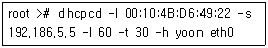
- MAC 주소는 00:10:4B:D6:49:22 이다.
- lastlogin은 60초이다.
- 타임아웃은 30초이다.
- 호스트 이름은 yoon이다.
(정답률: 70%)
94. DHCP 서버에서 대한 설명으로 틀린 것은?
- DHCP는 1개의 서브넷만 구성하여 사용할 수 있다.
- IP 주소를 동적으로 할당해주는 기능을 수행한다.
- DHCP는 사설망에서 고정 IP를 부여하기 위해 사용된다.
- DHCP 클라이언트는 부팅 시, IP 주소를 받아오기 위해 요청한다.
(정답률: 53%)
95. 다음 중 CVS 기능이 아닌 것은?
- Diff
- Update
- Export
- Checkout
(정답률: 38%)
96. DoS에 대한 설명 중 틀린 것은?
- 데이터를 파괴, 변조하기 위한 공격이 아니다.
- 공격의 원인이나 공격자를 추적하기 힘들다.
- 시스템 루트 권한을 획득하는 공격 패턴이다.
- 다른 공격을 위한 사전 공격으로 이용될 수 있다.
(정답률: 77%)
97. 다음에서 설명하는 것으로 알맞은 것은?
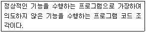
- 트로이 목마
- 웜 바이러스
- 백도어
- 방화벽
(정답률: 71%)
98. 대표적인 백도어인 루트킷에 대한 설명 중 틀린 것은?
- Es : sun4 기반 이더넷 스니퍼이다.
- Fix : 인터럽트 루틴을 삽입하여 은닉하는 도구이다.
- z2 : utmp, wtmp, lostlog로 부터 특정 엔트리를 제거한다.
- SI : 매직 패스워드를 통해 관리자로 로그인하는 도구이다.
(정답률: 52%)
99. 방화벽에 대한 설명 중 틀린 것은?
- iptables는 INPUT, OUTPUT, FORWARD 체인이 있다.
- 안전하지 않은 서비스를 필터링하여 위험을 감소시킬 수 있다.
- 방화벽 구축시 고려사항은 시간지연, 손실제어, 시스템실패환경 등을 들 수 있다.
- 방화벽 시스템을 구축하는 2가지 유형은 네트워크 레벨과 응용 레벨이다.
(정답률: 55%)
100. VPN의 대표적인 기술인 터널링 프로토콜이 아닌 것은?
- PPTP
- L2TP
- IPsec
- MD5
(정답률: 60%)
운영체제는 하드웨어와 사용자 간의 인터페이스를 제공하고, 시스템 자원을 스케줄링하여 효율적으로 관리하며, 응용프로그램의 작성과 실행을 편리하게 한다. 하지만 운영체제가 직접적으로 사용자가 원하는 특정 문제를 해결하는 것은 아니다. 사용자가 원하는 작업을 처리하기 위해서는 응용프로그램이 필요하며, 이를 실행하기 위해서는 운영체제가 필요하다.